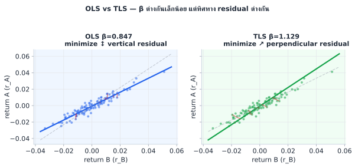
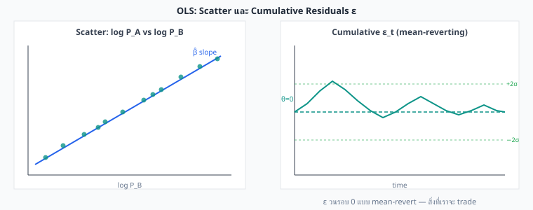
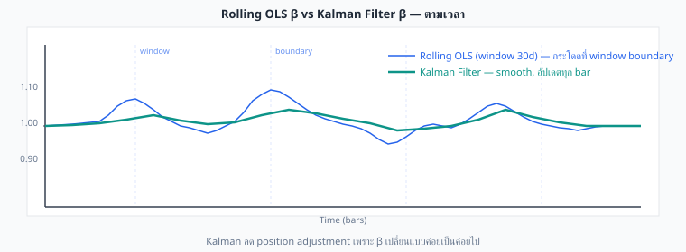
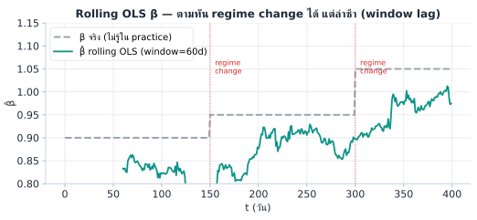
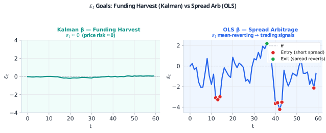
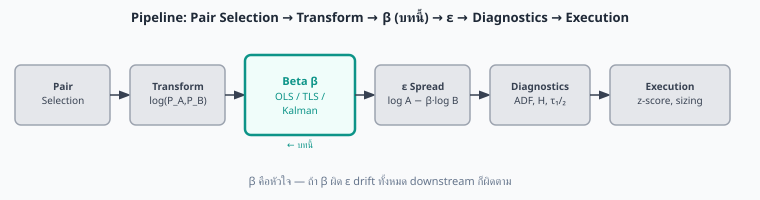
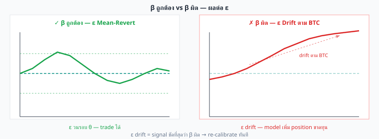
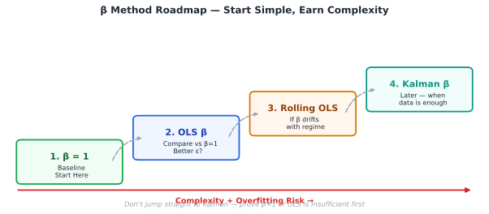

β คือตัวเลขที่ทำให้ \(\varepsilon = \log P_A - \beta \log P_B\) เป็น stationary
วิธีหา β มีผลต่อ entry ratio และ P&L โดยตรง — OLS, TLS, และ Kalman ให้ β ต่างกัน
จากบทที่ 1 เราทราบแล้วว่า β ≠ 1 — แต่คำถามคือ หา β ด้วยวิธีไหน? วิธีต่างกันให้ β ต่างกัน และ β ที่ต่างกันหมายถึงอัตราส่วน trade ต่างกัน → P&L ต่างกัน
OLS หา β ที่ minimize ระยะทางแนวตั้ง (vertical residual) จากจุดข้อมูลถึงเส้น regression:
หรือถ้า regress log(P_A) บน log(P_B) โดยตรง (level regression):
หมายเหตุ: β จาก return regression และ β จาก price-level regression เป็นคนละค่ากัน — สำหรับ synthetic process \(\varepsilon = \log P_A - \beta\log P_B\) ค่า β ที่เป็นหลัก (canonical) คือ slope ของ log-price regression

| สถานการณ์ | แนะนำ | เหตุผล |
|---|---|---|
| B เป็น "benchmark" (spot price, reference) | OLS | B มี noise น้อยกว่า A — OLS assume B error-free |
| ทั้งสองตลาด liquidity ใกล้เคียงกัน | TLS | ทั้งคู่ noisy พอๆ กัน — symmetric |
| ต้องการ β เสถียร ปรับน้อย | OLS rolling | คำนวณง่าย เปลี่ยนได้ตามรอบ |
| β เปลี่ยนเร็ว ต้องการ adaptive | Kalman | อัปเดตทุก tick |
สามคำนี้ใช้คำว่า "linear" ร่วมกันแต่มาจากคนละโดเมนกันโดยสิ้นเชิง:
| Linear Regression | OLS | Linear Programming (LP) | |
|---|---|---|---|
| คืออะไร | Model — สมมติว่าความสัมพันธ์เป็นเส้นตรง | Method — วิธีหนึ่งที่ใช้ fit model | Optimization — หา solution ที่ดีที่สุดภายใต้ constraint |
| "Linear" หมายถึง | β เข้า model แบบ linear: y = α + β·x | — | objective + constraints เป็นเส้นตรง |
| สมการหลัก | y = α + β·x + ε | minimize Σε² | minimize c·x s.t. Ax ≤ b |
| ใช้ทำอะไร | อธิบายความสัมพันธ์ระหว่างตัวแปร | หา β ที่ดีที่สุดใน linear regression | จัดสรรทรัพยากร, portfolio weight |
ความสัมพันธ์ที่มีจริง: OLS เป็น วิธีหนึ่ง ในการ fit Linear Regression — ไม่ใช่สิ่งเดียวกัน และ Linear Programming คือคนละโลกกันเลย ไม่เกี่ยวกับ regression เลย
จุดที่สับสนบ่อย: OLS minimize Σε² ซึ่งเป็น quadratic objective — จึงเป็น Quadratic Program (QP) ไม่ใช่ Linear Program แม้จะอยู่ใน "linear regression"
หมายเหตุ: หนังสือเล่มนี้ใช้ OLS เท่านั้น — MLE/Ridge/LAD แสดงไว้เพื่อเทียบนิยามเท่านั้น ไม่ได้ใช้ใน practice
เราไม่ได้ทำ OLS เพื่อ "ทำนาย" ราคา A จาก B — เราทำ OLS เพื่อ แยก common movement ออกจาก idiosyncratic movement ส่วนที่เหลือหลังแยก (residual ε) คือสิ่งที่เราเทรด
| สัญลักษณ์ | ความหมาย | หมายเหตุ |
|---|---|---|
| y_t | log(P_A,t) — ราคา A ในรูป log | dependent variable ที่ต้องการอธิบาย |
| x_t | log(P_B,t) — ราคา B ในรูป log | independent variable ที่ใช้อธิบาย |
| α | intercept — ค่าคงที่ปรับระดับ | ไม่ใช่ขา trade — เป็นแค่ constant ใน model |
| β | population slope (ค่าจริงไม่รู้) | เราประมาณ β̂ จากข้อมูล — β̂ คือ estimator |
| β̂ | sample estimate ของ β จาก OLS | ต่างกันทุก dataset — converges → β เมื่อ N→∞ |
| ε_t | residual = y_t − α − β·x_t | สิ่งที่เทรด — ต้องการให้ mean-revert |
| φ | AR(1) coefficient ของ ε | บทที่ 3 เรียกค่าเดียวกันว่า b: ε_t = a + b·ε_{t-1} + η_t |
| BLUE | Best Linear Unbiased Estimator | β̂ เป็น BLUE ถ้า Gauss-Markov assumptions ถือ |
| Gauss-Markov | 4 เงื่อนไขที่ทำให้ OLS เหมาะสมที่สุด | ε zero-mean, uncorrelated กับ x, homoskedastic, no autocorrelation |
| Homoskedastic | Var(ε_t) คงที่ทุก t | ในราคาจริง Var(ε) เปลี่ยนตาม vol — heteroskedastic |
หมายเหตุ: ทำไมใช้ log price ไม่ใช่ raw price → ดู §4.6.1 (สรุปสั้น: log → β เป็น elasticity ไม่ขึ้นกับ scale ราคา)
ปัญหา: กำหนด N คู่ราคา (P_A,1,…,P_A,N) และ (P_B,1,…,P_B,N) — หา α และ β ที่ทำให้ residual ε_t ขึ้นๆ ลงๆ รอบ 0 น้อยที่สุด (ε มี variance ต่ำสุดที่เป็นไปได้)
เขียนปัญหาเป็นสมการ:
หา minimum โดยหา partial derivative เทียบเท่า 0:
β = Cov(log P_A, log P_B) / Var(log P_B)
ตีความ: "ถ้า log(P_B) เพิ่มขึ้น 1 หน่วย (≈ B ขยับ +1%) ค่าเฉลี่ยของ log(P_A) ที่ OLS คาดไว้ จะเพิ่มขึ้น β หน่วย"
หรือพูดในเชิง % ≈ "B ขยับ 1% → A คาดว่าขยับ β%"
ε_t = ส่วนที่ A ขยับ มากกว่า หรือ น้อยกว่า ที่ B อธิบายได้ — นี่คือ inefficiency ที่เราเทรด

สมมติมีข้อมูล log price รายวัน 6 วัน (ย่อให้คำนวณมือได้):
| t | log P_B (x) | log P_A (y) | x − x̄ | y − ȳ | (x−x̄)(y−ȳ) | (x−x̄)² |
|---|---|---|---|---|---|---|
| 1 | 10.000 | 7.225 | −0.200 | −0.125 | 0.0250 | 0.0400 |
| 2 | 10.050 | 7.265 | −0.150 | −0.085 | 0.0128 | 0.0225 |
| 3 | 10.100 | 7.285 | −0.100 | −0.065 | 0.0065 | 0.0100 |
| 4 | 10.200 | 7.385 | +0.000 | +0.035 | 0.0000 | 0.0000 |
| 5 | 10.350 | 7.435 | +0.150 | +0.085 | 0.0128 | 0.0225 |
| 6 | 10.500 | 7.505 | +0.300 | +0.155 | 0.0465 | 0.0900 |
| รวม | 61.200 | 44.100 | — | — | Σ = 0.1035 | Σ = 0.1850 |
Gauss-Markov: ถ้า ε มี zero-mean, ไม่ correlate กับ x, Var(ε) คงที่ (homoskedastic), และไม่มี autocorrelation → β̂ จาก OLS เป็น BLUE (Best Linear Unbiased Estimator) — ดีที่สุดในบรรดา estimator linear ที่ unbiased ทั้งหมด
หลังจาก fit OLS และได้ ε มาแล้ว ต้องตรวจว่า ε มีคุณสมบัติสำหรับ mean reversion trading:
R² = 1 − Var(ε) / Var(y) = สัดส่วน variance ของ y ที่ x อธิบายได้
R²=0: x ไม่ช่วยอธิบาย y เลย | R²=1: x อธิบาย y ได้สมบูรณ์ | R²=0.95: x อธิบายได้ 95%
ใน Stat Arb ต้องการ R² สูง → แสดงว่า B อธิบาย A ได้ดี → ε เป็น idiosyncratic จริง ไม่ใช่ noise
| การทดสอบ | วิธีทำ | ผ่านเมื่อ | ความหมาย |
|---|---|---|---|
| R² และ p-value | model.rsquared, model.pvalues[1] | R² > 0.7, p < 0.05 | β มีนัยสำคัญ, B อธิบาย A ได้ดี |
| Residual plot | plot ε_t vs t | ε oscillate รอบ 0, ไม่ drift | ε mean-revert ตามที่ต้องการ |
| ADF / KPSS | statsmodels adfuller(epsilon) | ADF p < 0.05, KPSS p > 0.05 | ε stationary (ดู บทที่ 5) |
| Half-life | AR(1) fit บน ε: ε_t = φ·ε_{t-1} + u_t τ₁/₂ = −ln(2)/ln(φ) | τ₁/₂ ≤ target hold time | ε revert เร็วพอสำหรับกลยุทธ์ (บทที่ 3) |
ดู walk-forward validation: บทที่ 3 §3.9
log P_A และ log P_B เป็น I(1) process (random walk) — ถ้า regress สอง I(1) series ที่ ไม่มี cointegration จะได้ R² สูง, β มีนัยสำคัญ แต่ ε ยังคง non-stationary — ผลที่ได้ไม่มีความหมาย
แก้: ทดสอบ ADF/KPSS บน ε เสมอ — ผ่าน ADF ก่อนจึงใช้ β นั้น (ดู บทที่ 5)
OLS สมมติว่า β ไม่เปลี่ยนตลอด lookback window แต่ในตลาดจริง β อาจ drift ตาม regime
สัญญาณ: rolling β (30d vs 60d) ต่างกัน > 15% → ใช้ Rolling OLS หรือ Kalman แทน (§4.3, §4.6.3)
ดูรายละเอียด window และ trap เพิ่มเติม: §4.6.6
OLS minimize ε² → จุดที่อยู่ห่างจากเส้นมาก (outlier: crash, flash crash, pump) มี weight สูงเป็นพิเศษ → β ถูกดึงให้เข้าหา outlier
แก้: Winsorize ข้อมูลก่อน fit (clip return ที่ percentile 1–99) หรือใช้ Robust Regression (Huber/LAD) — แนวคิดเดียวกับ Robust Z-score ใน บทที่ 10 §10.3
กฎ: สำหรับ ε = log P_A − β·log P_B → ใช้ level regression บน log price ดูเหตุผลเพิ่มเติม: §4.6.1
| Assumption | ใน OLS standard | ในราคาจริง | ผลกระทบ + วิธีตรวจ |
|---|---|---|---|
| No autocorrelation | ε_t ไม่ correlate กับ ε_{t-1} | ε มักมี autocorrelation (ราคาติดต่อกัน) | SE ของ β̂ ผิด → ใช้ Durbin-Watson test (DW ≈ 2 = ดี; DW < 1.5 = autocorrelation สูง → ใช้ Newey-West SE) |
| Homoskedastic | Var(ε) คงที่ทุก t | Var(ε) เปลี่ยนตาม volatility (GARCH) | OLS inefficient ใน high-vol period → ใช้ WLS หรือ GARCH-adjusted |
| No endogeneity | x และ ε ไม่ correlate | P_A และ P_B ต่างก็มี measurement noise | β̂ biased → TLS ดีกว่าใน symmetric-noise case (§4.2) |
สรุป: ใช้ OLS เป็น baseline ไม่ใช่ oracle — ตรวจ ε เสมอ อย่าเชื่อแค่ R² และ p-value
ได้ข้อมูล log price รายวัน 4 วัน:
| วัน | log P_B (x) | log P_A (y) |
|---|---|---|
| 1 | 9.00 | 4.50 |
| 2 | 9.10 | 4.56 |
| 3 | 9.20 | 4.64 |
| 4 | 8.90 | 4.44 |
(ก) คำนวณ β_OLS และ α
(ข) คำนวณ ε สำหรับทุก t และตรวจว่า Σε_t = 0
(ค) ถ้า ADF test บน ε ให้ p=0.31 ควรทำอย่างไรต่อ?
(ก) x̄ = (9+9.1+9.2+8.9)/4 = 9.05 | ȳ = (4.50+4.56+4.64+4.44)/4 = 4.535
Σ(x−x̄)(y−ȳ) = (−.05)(−.035)+(0.05)(0.025)+(0.15)(0.105)+(−0.15)(−0.095)
= 0.00175 + 0.00125 + 0.01575 + 0.01425 = 0.033
Σ(x−x̄)² = 0.0025+0.0025+0.0225+0.0225 = 0.050
β = 0.033/0.050 = 0.660
α = 4.535 − 0.660×9.05 = 4.535 − 5.973 = −1.438
(ข)
ε₁ = 4.50 − (−1.438) − 0.660×9.00 = 4.50 + 1.438 − 5.940 = −0.002
ε₂ = 4.56 + 1.438 − 6.006 = −0.008
ε₃ = 4.64 + 1.438 − 6.072 = +0.006
ε₄ = 4.44 + 1.438 − 5.874 = +0.004
Σε = −0.002 − 0.008 + 0.006 + 0.004 = 0.000 ✅
(ค) ADF p=0.31 > 0.05 → ε non-stationary → pair นี้ไม่ cointegrate ด้วย β = 0.660
ทางเลือก: ลอง Johansen test เพื่อหา β ที่ดีกว่า, ขยาย lookback window, หรือเปลี่ยน pair
OLS และ TLS สมมติว่า β คงที่ตลอด lookback window แต่ในตลาดจริง β อาจเปลี่ยนได้ Kalman Filter แก้ปัญหานี้โดยอัปเดต β ทุก time step:
w_t ~ N(0, Q) — process noise (ความเร็วที่ β เปลี่ยน)
v_t ~ N(0, R) — observation noise (noise จากราคา)
Kalman Filter ทำงาน 2 ขั้นซ้ำกันทุก time step:
| ขั้น | สูตร | ความหมาย |
|---|---|---|
| Predict | β̂_t|t-1 = β̂_{t-1}, P_t|t-1 = P_{t-1} + Q | คาดว่า β ตอนนี้คืออะไร (ก่อนเห็นข้อมูล) |
| Update | K = P·r_B / (r_B²·P + R) β̂_t = β̂_t|t-1 + K·(r_A − β̂·r_B) P_t = (1−K·r_B)·P | ปรับ β ตามข้อมูลจริงที่เพิ่งเห็น |
K คือ Kalman Gain — ถ้า Q สูง (β เปลี่ยนเร็ว) K ใหญ่ → เชื่อข้อมูลใหม่มาก ถ้า R สูง (noisy market) K เล็ก → เชื่อ model เก่ามากกว่า

สำหรับ OLS rolling หรือ Kalman Q/R tuning ต้องเลือก lookback ให้เหมาะกับ strategy:
| Lookback | ข้อดี | ข้อเสีย | เหมาะกับ |
|---|---|---|---|
| 7 วัน | Responsive ต่อ regime ใหม่ | Noisy, β กระโดด | Fast intraday |
| 30 วัน | สมดุล stability/responsiveness | Lag ช้า | Intraday-swing (แนะนำ) |
| 90 วัน | Stable, noise น้อย | ปรับ regime เปลี่ยนช้ามาก | Position trade |
การ "ลองหลาย window size แล้วเลือกที่ได้ ε สวยที่สุด" คือ lookback selection bias เดียวกับที่เตือนไว้ใน §3.10 เพียงแต่เกิดกับ β แทน AR(1)
วิธีป้องกัน: เลือก window จาก half-life ของ pair (ควรครอบคลุมอย่างน้อย 3× half-life) → ทดสอบด้วย walk-forward (§3.9) → ไม่เปลี่ยน window หลัง deploy โดยไม่มีเหตุผลใหม่

ในระบบจริงบน Bybit↔Lighter ใช้ 3 stage:
OLS สมมติว่า β คงที่ตลอด window ข้อมูล — แต่ในตลาดจริง β เปลี่ยนตลอดเวลาตาม liquidity ratio, funding rate differential, และ market regime
อันตรายที่สุด: ใช้ β ที่ fit บน "quiet market" เข้าไป trade ใน "volatile regime" — ε จะ drift เป็น trend แทนที่จะ mean-revert และ model จะสั่ง "average down" เข้าขาดทุนต่อเนื่อง
สัญญาณเตือน: R² ของ OLS ลดลงต่ำกว่า 0.85 จากปกติ หรือ residual autocorrelation เพิ่มสูงขึ้น → β ไม่ stable แล้ว
OLS/TLS/Kalman ไม่ใช่แค่ตัวเลือกที่ดีกว่ากัน — แต่ละตัวถูกออกแบบมาเพื่อวัตถุประสงค์ต่างกัน เลือกให้ตรงกับสิ่งที่ต้องการ
| วัตถุประสงค์ | Model | ε target (variance) | แหล่งกำไรหลัก |
|---|---|---|---|
| Funding Rate Harvest Perp↔Perp / Spot↔Perp |
Kalman Filter (dynamic β_t) | σ² → 0 — กราฟแบนขนานศูนย์ | Funding rate yield — เพิ่ม leverage ปลอดภัยได้เพราะ price risk ≈ 0 |
| Hybrid: Spread + Funding Spot↔Future / Pairs Trading |
OLS/TLS (static β) + walk-forward | σ_stat "Optimal Substantial" — กว้างพอกว่า friction แต่ half-life สั้น | Capital gain จาก mean reversion และ basis/funding |
| Volatility Arbitrage Spot↔Option (ขั้นสูง) |
GARCH(1,1) + Delta-Neutral hedge | Dynamic — ขึ้นกับ IV regime — กรอง vol clustering ด้วย GARCH | IV mispricing บน Options surface — นอกขอบเขตหนังสือนี้ |
เป้าหมายคือ market-neutral perfect hedge: Kalman β_t ปรับทุก bar ตาม cost-of-carry จริง ทำให้ ε_t ≈ 0 ตลอดเวลา PnL ทั้งหมดมาจาก funding rate เท่านั้น ไม่ใช่ price movement ยิ่ง ε เล็กยิ่งดี — แสดงว่า hedge สมบูรณ์
OLS lock β จากอดีต — ความไม่สมบูรณ์ของ hedge นี้เองคือแหล่งกำไร ε_t ที่มี variance สูงหมายถึงโอกาสเทรดมาก เมื่อ ε เบี่ยงจาก mean → entry; เมื่อ revert กลับ → exit
Kalman ไม่ได้ "ดีกว่า" OLS เสมอ — ถ้าใช้ Kalman กับ Spread Arb จะได้ ε → 0 ซึ่งทำให้ไม่มีสัญญาณ เพราะ β_t ปรับตัวจนกำจัด spread ออกไปหมด ต้องเลือก method ให้ตรงกับ สิ่งที่ต้องการให้ ε ทำ

สำหรับ Hybrid Strategy สิ่งที่กำหนด "กว้างพอ" ของ σ_stat คือสมการ Breakeven จาก บทที่ 19.7:
ถ้า σ_stat ต่ำกว่า threshold นี้ → gross spread ที่ entry ไม่ครอบคลุม friction → net_edge < 0 → ห้ามเทรด
σ_stat ที่ "พอเหมาะ" ต้องตอบ สองเงื่อนไขพร้อมกัน:
ช่วงระหว่าง lower–upper bound นี้คือ "Tradeable Window" ของกลยุทธ์ Hybrid
ก่อนลงรายละเอียดว่าใช้ method ไหน ต้องเข้าใจ ตำแหน่งของ β ในภาพใหญ่ก่อน — สิ่งที่เราต้องการสร้างจริงๆ ไม่ใช่ β แต่เป็น ε (synthetic process) ส่วน β คือแกนสำคัญที่สุดที่ทำให้สร้าง ε ได้ ถูกสัดส่วน
β คือ อัตราส่วนผสม (mixing ratio / hedge ratio) ที่ตอบว่า "ถ้ามี A 1 หน่วย ต้องใช้ B กี่หน่วยมาหักล้าง?" — ประโยคที่แม่นที่สุดคือ: β คืออัตราส่วนที่ใช้ผสมสองสิ่ง เพื่อให้ได้ ε ที่มีคุณสมบัติเทรดได้
| β | สมการ ε | ความหมายของการผสม |
|---|---|---|
| β = 1 | ε = A − B | ผสม 1:1 — ใช้ B เท่ากับ A |
| β = 0.8 | ε = A − 0.8B | ใช้ B แค่ 0.8 เท่าของ A |
| β = 1.3 | ε = A − 1.3B | ใช้ B มากกว่า A เพื่อหักล้าง exposure ให้พอดี |
ให้ A = BTC basis บน Lighter, B = BTC basis บน Bybit — เราไม่ดูแค่ผลต่างดิบ A − B แต่ดู ε = A − βB เพราะ β ตอบว่า "Bybit basis ควรถูกถ่วงน้ำหนักเท่าไร จึงหักล้าง Lighter basis ได้พอดี" ถ้าถ่วงผิดสัดส่วน ส่วนที่เหลือจะไม่ใช่ inefficiency แท้ แต่เป็น market move ที่หักล้างไม่หมด → signal หลอก
β กำหนดว่า process ใหม่จะ "หน้าตา" เป็นอย่างไร — มันไม่ใช่แค่ตัวเลขประกอบสูตร แต่เป็นตัวกำหนดโครงสร้างของ synthetic process:
common movement ถูกหักล้าง · ε นิ่งขึ้น · mean reversion ชัดขึ้น · เป็น risk-neutral จริง
ε drift · signal หลอก · กลายเป็น directional bet · position size ผิด · risk สูงกว่าที่คิด
β สำคัญมาก แต่ ไม่ใช่ทุกอย่าง — มันเป็นขั้นที่ 3 ของกระบวนการสร้าง process ต้องมี pair selection + transformation มาก่อน และมี diagnostics + execution gate ตามหลัง:

หลักการ "หาอัตราส่วนที่ถูกต้องเพื่อสร้าง process ใหม่" ใช้ได้กับทุก asset class — ใน option process: ε = Option − Δ·Underlying โดย Δ (delta) ทำหน้าที่เป็น hedge ratio แทน β แนวคิดเดียวกัน: ไม่จำเป็นต้องผสม 1:1
ที่เหลือของ §4.6 เจาะเรื่องที่ทำให้ β ใช้ได้จริง ไม่ใช่แค่ตัวเลขสวยบน backtest: เลือกข้อมูลที่ถูก (§4.6.1) · เข้าใจว่า β หักล้างอะไร (§4.6.2) · เลือก method ตามสถานการณ์ (§4.6.3–4.6.4) · ประเมินคุณภาพและเลี่ยงกับดัก (§4.6.5–4.6.6)
β ไม่มีค่าเดียวตายตัว — ค่ามันขึ้นกับว่าคุณ regress ราคาดิบ, log price, หรือ basis สามแบบนี้ให้ β คนละตัวเลข และตอบคนละคำถาม
| Input ที่ regress | สมการ ε | ใช้เมื่อ | β หมายถึงอะไร |
|---|---|---|---|
| Raw price | ε = P_A − β·P_B | scale ราคาใกล้กัน / ต้องการดูภาพ scatter | $ ของ A ต่อ $1 ของ B — ขึ้นกับ scale ราคา |
| Log price | ε = log P_A − β·log P_B | default — pairs ทั่วไป (ที่หนังสือเล่มนี้ใช้) | elasticity: %A ต่อ %B — scale-invariant |
| Basis / spread | ε = basis_A − β·basis_B | funding arb, perp↔perp, swap arb (บทที่ 21) | sensitivity ของ basis ขาหนึ่งต่ออีกขา |
ภาพวิเคราะห์ BTC/ETH ที่นิยมแชร์กัน fit regression บน ราคาดิบ: ETH = α + β·BTC ได้ β = 0.0444 ตัวเลขนี้แปลว่า "ETH ขยับ $0.0444 ต่อทุก $1 ที่ BTC ขยับ" — มันถูกในเชิงเลขคณิต แต่ ขึ้นกับระดับราคา: ถ้า BTC แตก scale (เช่น redenominate ÷10) β จะกลายเป็น 0.444 ทันที ทั้งที่ความสัมพันธ์จริงไม่เปลี่ยน
ถ้า regress log price แทน: log(ETH) = α + β·log(BTC) จะได้ β เป็น elasticity (สำหรับ crypto major มักใกล้ 1) — ค่านี้ไม่เปลี่ยนตาม scale ราคา จึงเอาไป calibrate ข้าม regime ได้ปลอดภัยกว่า หนังสือเล่มนี้ใช้สมการ ε = log P_A − β·log P_B เป็นมาตรฐานด้วยเหตุผลนี้
β = 0.0444 เป็นแค่ slope บนกราฟ scatter — ต้องแปลงเป็น กฎกำหนดขนาด position ที่ทำให้ exposure ต่อ common factor หักล้างกัน (ดู §4.6.2) ข้อควรระวัง: hedge ที่ถูกต้อง ไม่จำเป็น ต้องเป็น dollar-neutral เป๊ะ — มันคือ factor-neutral
จุดที่หลายคนสับสน: A − βB ไม่ได้แปลว่าต้องทำให้ βB มีค่า "เท่ากับ" A ตลอดเวลา — βB คือ ส่วนของ A ที่ B อธิบายได้ ส่วนที่เหลือคือ ε
βB = "เส้น fair relationship" (ส่วนที่เคลื่อนตาม B) · ε = ส่วนผิดปกติที่เหลือหลังใช้ B อธิบาย A — βB ไม่ใช่ราคาที่ต้องเท่ากับ A เสมอ
| สถานะ | ε | ความหมาย |
|---|---|---|
| A = βB | ε = 0 | process อยู่ที่ equilibrium / mean |
| A > βB | ε > 0 | A แพงกว่าที่ควรเป็นเมื่อเทียบกับ B |
| A < βB | ε < 0 | A ถูกกว่าที่ควรเป็นเมื่อเทียบกับ B |
แล้ว β ผิด ทำให้กลายเป็น directional ได้อย่างไร? สมมติ A และ B ถูกขับเคลื่อนด้วยแรงตลาดเดียวกัน (เช่น BTC market factor):
ใช้ ε = A − 1·B → ยังเหลือ exposure ต่อ B เยอะ เพราะ A ขยับมากกว่าที่ 1B หักล้างได้
ใช้ ε = A − 2·B → ส่วนที่เคลื่อนไหวร่วมกันถูกหักล้างพอดี
→ β ทำให้ ความไวต่อ common factor เท่ากัน ไม่ใช่ทำให้ มูลค่า เท่ากัน

แยก 2 คำให้ขาด — ในการเทรดจริงต้องไม่สับสนระหว่าง:
| Value / Notional matching | Risk / Factor matching | |
|---|---|---|
| นิยาม | มูลค่าเงินสองขาเท่ากัน | exposure ต่อ factor สองขาเท่ากัน |
| ตัวอย่าง | Long A $10,000 / Short B $10,000 | Long A $10,000 / Short B $8,000 (ถ้า B ขยับแรงกว่า) |
| ให้อะไร | dollar-neutral | hedge ที่ถูกต้องจริง (factor-neutral) |
notional เท่ากัน ไม่ได้แปลว่า hedge ถูก · notional ไม่เท่ากัน ไม่ได้แปลว่า directional — สิ่งที่ตัดสินคือ exposure ต่อ common factor ถูกหักล้างหมดหรือยัง
เขียน spread change เป็นสมการ:
ถ้า β ถูกต้อง → exposure_A − β × exposure_B ≈ 0 → ε ไม่ขึ้นกับตลาด
ถ้า β ผิด → เทอมแรกไม่ใช่ศูนย์ → ε correlate กับ market_return → directional bet แฝง
β ที่เหมาะสมจึงต้องอยู่ที่:
เช่น BTC Lighter vs BTC Bybit — ถ้า Lighter sensitive ต่อ BTC มากกว่า Bybit 1.2× → β ≈ 1.2 ไม่ใช่ 1.0
Test 1 — Correlation กับ market return
Test 2 — Factor regression
Test 3 — PnL แยกตามทิศทางตลาด
Test 4 — Stationarity (จำเป็นแต่ไม่เพียงพอ)
Test 5 — Half-life และ Crossing Rate
Test 6 — Rolling β Stability
Residual ที่ดีควรเหลือ "ความผิดปกติระหว่างสองขา" — ไม่ใช่ "ทิศทางตลาด" ที่ hedge ไม่หมด
β ไม่ได้มีหน้าที่ทำให้ B "ราคาเท่ากับ" A — β มีหน้าที่ทำให้ B "หักล้าง exposure ของ A" ได้เหมาะสม
ถ้า β ดี สิ่งที่เหลือคือ residual · ถ้า β แย่ สิ่งที่เหลือคือ directional bet ที่ปลอมตัวเป็น stat arb
§4.2–4.3 อธิบาย OLS / TLS / Kalman เชิงลึก — ตารางนี้รวมทุกวิธีไว้เป็น "เมนู" เดียวเพื่อเลือกใช้ตามสถานการณ์:
| วิธี | ใช้เมื่อ | ข้อดี | ข้อเสีย |
|---|---|---|---|
| β = 1 | สินทรัพย์เดียวกัน, exposure เท่ากัน (BTC perp ↔ BTC perp) | ง่ายสุด, ไม่ overfit | หยาบ — venue ต่างกันเรื่อง funding/index/liquidity |
| Contract ratio | crack spread / product ที่มี ratio เชิงกลไกชัดเจน | mechanism ชัด ไม่ต้อง fit | ใช้ได้เฉพาะบางตลาด |
| OLS | pair 2 ตัวทั่วไป — baseline เริ่มต้น | ง่าย, เร็ว, ตีความได้ | β คงที่ — อาจ outdate เมื่อ regime เปลี่ยน |
| Rolling OLS | ความสัมพันธ์เปลี่ยนตาม regime | adaptive กว่า OLS static | noisy ถ้า window สั้นเกิน |
| TLS | ทั้ง X และ Y มี noise พอๆ กัน | สมดุลกว่า OLS (ดู §4.2) | ซับซ้อนขึ้น, ตีความยากกว่า |
| Kalman | β เปลี่ยนตลอดเวลา / Funding Harvest (§4.5) | dynamic, online update | overfit ง่าย, tune Q/R ยาก |
| Johansen | multi-leg / basket (≥ 3 ขา) | หา cointegrating vector หลายขาพร้อมกัน | overfit ง่าย, ต้องระวังเป็นพิเศษ |
| Greek (Delta/Vega) | options / volatility strategy | ตรงกับโครงสร้าง option | ต้อง update ตลอดเพราะ Greek เปลี่ยน |
ข้อผิดพลาดที่พบบ่อยคือเริ่มจาก Kalman ทันทีเพราะ "ดูฉลาด" — แต่ Kalman มีพารามิเตอร์ให้ tune เยอะ จึง overfit ง่ายมากเมื่อข้อมูลยังน้อย ลำดับที่แนะนำสำหรับ scanner v1:

β ที่ดี ไม่ใช่ β ที่ทำให้กราฟ backtest สวยที่สุด — แต่คือ β ที่ทำให้ process เทรดได้จริงและ robust ใช้ checklist นี้:
คุณจะหา β ของสามคู่นี้:
ถาม: แต่ละคู่ควร regress raw price, log price, หรือ basis?
(ก) Log price (หรือเริ่ม β=1) — สินทรัพย์เดียวกัน scale ราคาเท่ากัน เริ่มจาก β=1 เป็น baseline แล้วเทียบกับ OLS บน log price
(ข) Log price — PAXG กับ XAU ราคาใกล้กันแต่ไม่ใช่ instrument เดียว 100%; log price ทำให้ β เป็น elasticity ที่ robust
(ค) Basis — เป้าหมายคือเก็บ funding ไม่ใช่ price reversion; regress basis = (perp − spot)/spot เพื่อให้ β สะท้อน funding driver ตรงๆ ไม่ใช่ price movement ร่วม
บริษัท Quant เปิดสองกลยุทธ์:
ถาม: กลยุทธ์ไหนทำกำไรจาก funding rate? กลยุทธ์ไหนทำกำไรจาก price inefficiency?
(ก) Funding Harvest — Kalman β_t ปรับจน price risk ≈ 0 ดังนั้น PnL มาจาก funding rate ล้วนๆ income = funding rate ที่ได้รับตลอด holding period
(ข) Spread Arbitrage — OLS β คงที่ ทำให้ ε_t แกว่งรอบ mean income = reversion ของ ε กลับสู่ θ ทำกำไรจาก price inefficiency ระหว่างสองตลาด
สรุป: Kalman → funding income | OLS → spread reversion income ใช้สลับกันจะไม่ได้ผลตามที่ตั้งใจ
Log returns รายวัน 5 วัน:
| วัน | r_Bybit (%) | r_Lighter (%) |
|---|---|---|
| 1 | +1.20 | +1.15 |
| 2 | −0.80 | −0.75 |
| 3 | +2.10 | +2.05 |
| 4 | −1.50 | −1.48 |
| 5 | +0.60 | +0.58 |
ถาม: คำนวณ β_OLS (Bybit เป็น A, Lighter เป็น B)
r̄_A = (1.20−0.80+2.10−1.50+0.60)/5 = 1.60/5 = 0.320%
r̄_B = (1.15−0.75+2.05−1.48+0.58)/5 = 1.55/5 = 0.310%
Cov(r_A,r_B) = Σ(r_A−r̄_A)(r_B−r̄_B) / (n−1):
= [(0.88)(0.84) + (−1.12)(−1.06) + (1.78)(1.74) + (−1.82)(−1.79) + (0.28)(0.27)] / 4
= [0.739 + 1.187 + 3.097 + 3.258 + 0.076] / 4 = 8.357/4 = 2.089
Var(r_B) = Σ(r_B−r̄_B)² / (n−1) = [0.706 + 1.124 + 3.024 + 3.204 + 0.073] / 4 = 2.033
β_OLS = 2.089 / 2.033 = 1.028
→ Long Bybit $100,000 ต้อง Short Lighter $102,800
คุณ trade spread ระหว่าง BTC perpetual บน Binance (volume 10× ของ Lighter) กับ Lighter
ทั้งสองตลาดมี liquidity ต่างกันมาก — Binance เป็น "price discovery" หลัก
ถาม: ควรใช้ OLS หรือ TLS? และ Binance ควรเป็น A หรือ B ใน regression?
ใช้ OLS เพราะ Binance มี volume มากกว่า → ราคา Binance เป็น "true price" ที่ error น้อยกว่า OLS assume B ไม่มี noise ดังนั้น Binance = B (ตัวที่ regress ต่อ)
Regression: r_Lighter = α + β·r_Binance + ε
β = Cov(r_Lighter, r_Binance) / Var(r_Binance)
ความหมาย: ε = r_Lighter − β·r_Binance → trade Lighter เมื่อ Lighter เบี่ยงจาก Binance
คุณตั้ง Kalman กับ Q=1e-9 (เล็กมาก) และ R=1e-4 (ใหญ่มาก)
สังเกตว่า β_Kalman แทบไม่เปลี่ยนเลย แม้ตลาดจะเปลี่ยน
ถาม: อธิบายว่าเกิดอะไรขึ้น และควรปรับ Q หรือ R อย่างไร?
Q เล็กมาก → model บอกว่า β เปลี่ยนช้ามาก
R ใหญ่มาก → model บอกว่า observation noisy มาก
Kalman Gain K = P·r_B / (r_B²·P + R) → R ใหญ่ทำให้ K เล็กมาก → β ไม่อัปเดต
แก้: เพิ่ม Q (เช่น 1e-6) เพื่อให้ model อนุญาตให้ β เปลี่ยนเร็วขึ้น
หรือลด R (เช่น 1e-5) เพื่อ trust ข้อมูลมากขึ้น
Tune โดย backtest: ดู β ว่า responsive พอแต่ไม่ noisy เกินไป
Ch.4 Hedge Ratio β | ต่อไป → Ch.5: Cointegration Tests